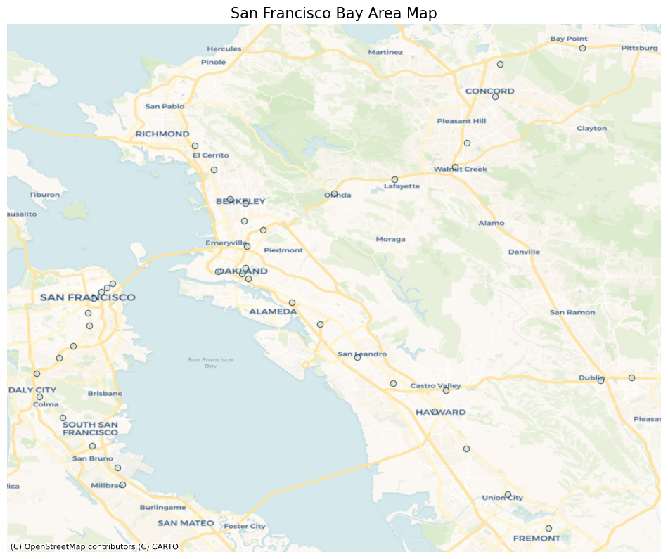

import geopandas as gpd
import matplotlib.pyplot as plt
import contextily as ctxdf_stations = df.groupby(['Date', 'End'])['Riders'].sum().compute()
df_stations = df_stations.reset_index()
df_stations.head()| Date | End | Riders | |
|---|---|---|---|
| 0 | 2011-01-01 | 12TH | 2589 |
| 1 | 2011-01-01 | 16TH | 4490 |
| 2 | 2011-01-01 | 19TH | 2157 |
| 3 | 2011-01-01 | 24TH | 5212 |
| 4 | 2011-01-01 | ASHB | 2155 |
station_name_crosswalk = pd.read_csv("station_names.csv")
station_name_crosswalk['Abbr'] = station_name_crosswalk['Abbr'].str.upper()
station_name_crosswalk.head()| Abbr | Station Name | |
|---|---|---|
| 0 | 12TH | 12th St. Oakland City Center |
| 1 | 16TH | 16th St. Mission (SF) |
| 2 | 19TH | 19th St. Oakland |
| 3 | 24TH | 24th St. Mission (SF) |
| 4 | ASHB | Ashby (Berkeley) |
df_stations_merge = df_stations.merge(station_name_crosswalk, left_on='End', right_on='Abbr', how="left").drop(columns=['Abbr'])
df_stations_merge.head()| Date | End | Riders | Station Name | |
|---|---|---|---|---|
| 0 | 2011-01-01 | 12TH | 2589 | 12th St. Oakland City Center |
| 1 | 2011-01-01 | 16TH | 4490 | 16th St. Mission (SF) |
| 2 | 2011-01-01 | 19TH | 2157 | 19th St. Oakland |
| 3 | 2011-01-01 | 24TH | 5212 | 24th St. Mission (SF) |
| 4 | 2011-01-01 | ASHB | 2155 | Ashby (Berkeley) |
stations = gpd.read_file("California_Rail_Stations.geojson")
bart_stations = stations[stations['COMM_OP'] == "BART"]
bart_stations.head()| OBJECTID | LOCATION | STATION | CODE | ADDRESS | ZIP | PASS_OP | PASS_NETWO | COMM_OP | COMM_NETWO | BUS_ROUTES | TRANSIT | AIRPORT | STATION_TY | INTERMODAL | DIST | CO | geometry | |
|---|---|---|---|---|---|---|---|---|---|---|---|---|---|---|---|---|---|---|
| 52 | 53 | BART Station | DUBLIN/PLEASANTON | DBP | I-580 at Hopyard (Mid-Day Parking) | 94588 | BART | BART | 6,34 | 3 | 1 | 4 | ALA | POINT (-121.89849 37.70247) | ||||
| 212 | 213 | NORTH BERKELEY | 0 | BART | BART | 1 | 0 | 4 | ALA | POINT (-122.28335 37.87406) | ||||||||
| 213 | 214 | DOWNTOWN BERKELEY | 0 | BART | BART | 1 | 0 | 4 | ALA | POINT (-122.26825 37.86969) | ||||||||
| 214 | 215 | ASHBY | 0 | BART | BART | 1 | 0 | 4 | ALA | POINT (-122.27012 37.85321) | ||||||||
| 215 | 216 | ROCKRIDGE | 0 | BART | BART | 1 | 0 | 4 | ALA | POINT (-122.25178 37.84451) |
from rapidfuzz.process import extractOne
from rapidfuzz.distance import Levenshtein, JaroWinklerLevenshtein.normalized_distance("peter", "peterd")0.16666666666666666Levenshtein.normalized_distance("peter", "dpeter")0.16666666666666666JaroWinkler.normalized_distance("peter", "dpeter")0.05555555555555547JaroWinkler.normalized_distance("peter", "peterd")0.033333333333333326def match_dict(left_series: pd.Series, right_series: pd.Series, scoring=Levenshtein.distance):
mapping = pd.Series({
index: right_series.unique()[extractOne(index.lower(), right_series.str.lower().unique(), scorer=scoring)[-1]]
for index in left_series
})
return mappingmatch_dict(bart_stations['STATION'], df_stations_merge['Station Name'], scoring=JaroWinkler.normalized_distance)DUBLIN/PLEASANTON Dublin/Pleasanton
NORTH BERKELEY North Berkeley
DOWNTOWN BERKELEY Downtown Berkeley
ASHBY Ashby (Berkeley)
ROCKRIDGE Rockridge (Oakland)
MACARTHUR MacArthur (Oakland)
19TH STREET/OAKLAND 19th St. Oakland
WEST OAKLAND West Oakland
12TH ST/OAKLAND CITY CENTER 12th St. Oakland City Center
LAKE MERRITT Lake Merritt (Oakland)
FRUITVALE Fruitvale (Oakland)
COLISEUM/OAKLAND AIRPORT (OAK) Coliseum
SAN LEANDRO San Leandro
BAY FAIR Bay Fair (San Leandro)
CASTRO VALLEY Castro Valley
HAYWARD Hayward
SOUTH HAYWARD South Hayward
UNION CITY Union City
FREMONT Fremont
PITTSBURG/BAY POINT Pittsburg/Bay Point
NORTH CONCORD/MARTINEZ North Concord/Martinez
CONCORD Concord
EL CERRITO DEL NORTE El Cerrito del Norte
PLEASANT HILL/CONTRA COSTA CEN Pleasant Hill
EL CERRITO PLAZA El Cerrito Plaza
WALNUT CREEK Walnut Creek
LAFAYETTE Lafayette
ORINDA Orinda
EMBARCADERO Embarcadero (SF)
MONTGOMERY STREET Montgomery St. (SF)
POWELL STREET Powell St. (SF)
CIVIC CENTER/ UN PLAZA Civic Center (SF)
16TH STREET & MISSION 16th St. Mission (SF)
24TH STREET & MISSION 24th St. Mission (SF)
GLEN PARK Glen Park (SF)
BALBOA PARK Balboa Park (SF)
DALY CITY Daly City
COLMA Colma
SAN BRUNO San Bruno
SFO INTERNATIONAL AIRPORT San Francisco Int'l Airport
MILLBRAE Millbrae
SOUTH SAN FRANCISCO South San Francisco
WEST DUBLIN/PLEASANTON West Dublin
dtype: objectdf_stations_merge['Station Name']0 12th St. Oakland City Center
1 16th St. Mission (SF)
2 19th St. Oakland
3 24th St. Mission (SF)
4 Ashby (Berkeley)
...
227151 Union City
227152 Warm Springs/South Fremont
227153 Walnut Creek
227154 West Dublin
227155 West Oakland
Name: Station Name, Length: 227156, dtype: object{index: extractOne(index.lower(), df_stations_merge['Station Name'].str.lower().unique(), scorer=JaroWinkler.distance)[-1] for index in bart_stations['STATION']}{'DUBLIN/PLEASANTON': ('dublin/pleasanton', 0.0, 15),
'NORTH BERKELEY': ('north berkeley', 0.0, 26),
'DOWNTOWN BERKELEY': ('downtown berkeley', 0.0, 13),
'ASHBY': ('ashby (berkeley)', 0.13749999999999996, 4),
'ROCKRIDGE': ('rockridge (oakland)', 0.10526315789473684, 34),
'MACARTHUR': ('macarthur (oakland)', 0.10526315789473684, 23),
'19TH STREET/OAKLAND': ('19th st. oakland', 0.07763157894736838, 2),
'WEST OAKLAND': ('west oakland', 0.0, 42),
'12TH ST/OAKLAND CITY CENTER': ('12th st. oakland city center',
0.06784696784696786,
0),
'LAKE MERRITT': ('lake merritt (oakland)', 0.09090909090909094, 22),
'FRUITVALE': ('fruitvale (oakland)', 0.10526315789473684, 18),
'COLISEUM/OAKLAND AIRPORT (OAK)': ('coliseum', 0.14666666666666672, 10),
'SAN LEANDRO': ('san leandro', 0.0, 35),
'BAY FAIR': ('bay fair (san leandro)', 0.1272727272727272, 6),
'CASTRO VALLEY': ('castro valley', 0.0, 7),
'HAYWARD': ('hayward', 0.0, 20),
'SOUTH HAYWARD': ('south hayward', 0.0, 38),
'UNION CITY': ('union city', 0.0, 40),
'FREMONT': ('fremont', 0.0, 17),
'PITTSBURG/BAY POINT': ('pittsburg/bay point', 0.0, 30),
'NORTH CONCORD/MARTINEZ': ('north concord/martinez', 0.0, 27),
'CONCORD': ('concord', 0.0, 11),
'EL CERRITO DEL NORTE': ('el cerrito del norte', 0.0, 14),
'PLEASANT HILL/CONTRA COSTA CEN': ('pleasant hill', 0.11333333333333329, 29),
'EL CERRITO PLAZA': ('el cerrito plaza', 0.0, 31),
'WALNUT CREEK': ('walnut creek', 0.0, 41),
'LAFAYETTE': ('lafayette', 0.0, 21),
'ORINDA': ('orinda', 0.0, 28),
'EMBARCADERO': ('embarcadero (sf)', 0.0625, 16),
'MONTGOMERY STREET': ('montgomery st. (sf)', 0.1102167182662539, 25),
'POWELL STREET': ('powell st. (sf)', 0.1415384615384616, 32),
'CIVIC CENTER/ UN PLAZA': ('civic center (sf)', 0.1288770053475936, 8),
'16TH STREET & MISSION': ('16th st. mission (sf)', 0.1327380952380952, 1),
'24TH STREET & MISSION': ('24th st. mission (sf)', 0.1327380952380952, 3),
'GLEN PARK': ('glen park (sf)', 0.0714285714285714, 19),
'BALBOA PARK': ('balboa park (sf)', 0.0625, 5),
'DALY CITY': ('daly city', 0.0, 12),
'COLMA': ('colma', 0.0, 9),
'SAN BRUNO': ('san bruno', 0.0, 36),
'SFO INTERNATIONAL AIRPORT': ("san francisco int'l airport",
0.20064646464646474,
37),
'MILLBRAE': ('millbrae', 0.0, 24),
'SOUTH SAN FRANCISCO': ('south san francisco', 0.0, 39),
'WEST DUBLIN/PLEASANTON': ('west dublin', 0.09999999999999998, 43)}test = pd.Series({index: extractOne(index.lower(), df_stations_merge['Station Name'].str.lower().unique(), scorer=JaroWinkler.distance)[0] for index in bart_stations['STATION']})test.reset_index() df_stations_merge['Station Name'].str.lower()| index | 0 | |
|---|---|---|
| 0 | DUBLIN/PLEASANTON | dublin/pleasanton |
| 1 | NORTH BERKELEY | north berkeley |
| 2 | DOWNTOWN BERKELEY | downtown berkeley |
| 3 | ASHBY | ashby (berkeley) |
| 4 | ROCKRIDGE | rockridge (oakland) |
| 5 | MACARTHUR | macarthur (oakland) |
| 6 | 19TH STREET/OAKLAND | 19th st. oakland |
| 7 | WEST OAKLAND | west oakland |
| 8 | 12TH ST/OAKLAND CITY CENTER | 12th st. oakland city center |
| 9 | LAKE MERRITT | lake merritt (oakland) |
| 10 | FRUITVALE | fruitvale (oakland) |
| 11 | COLISEUM/OAKLAND AIRPORT (OAK) | coliseum |
| 12 | SAN LEANDRO | san leandro |
| 13 | BAY FAIR | bay fair (san leandro) |
| 14 | CASTRO VALLEY | castro valley |
| 15 | HAYWARD | hayward |
| 16 | SOUTH HAYWARD | south hayward |
| 17 | UNION CITY | union city |
| 18 | FREMONT | fremont |
| 19 | PITTSBURG/BAY POINT | pittsburg/bay point |
| 20 | NORTH CONCORD/MARTINEZ | north concord/martinez |
| 21 | CONCORD | concord |
| 22 | EL CERRITO DEL NORTE | el cerrito del norte |
| 23 | PLEASANT HILL/CONTRA COSTA CEN | pleasant hill |
| 24 | EL CERRITO PLAZA | el cerrito plaza |
| 25 | WALNUT CREEK | walnut creek |
| 26 | LAFAYETTE | lafayette |
| 27 | ORINDA | orinda |
| 28 | EMBARCADERO | embarcadero (sf) |
| 29 | MONTGOMERY STREET | montgomery st. (sf) |
| 30 | POWELL STREET | powell st. (sf) |
| 31 | CIVIC CENTER/ UN PLAZA | civic center (sf) |
| 32 | 16TH STREET & MISSION | 16th st. mission (sf) |
| 33 | 24TH STREET & MISSION | 24th st. mission (sf) |
| 34 | GLEN PARK | glen park (sf) |
| 35 | BALBOA PARK | balboa park (sf) |
| 36 | DALY CITY | daly city |
| 37 | COLMA | colma |
| 38 | SAN BRUNO | san bruno |
| 39 | SFO INTERNATIONAL AIRPORT | san francisco int'l airport |
| 40 | MILLBRAE | millbrae |
| 41 | SOUTH SAN FRANCISCO | south san francisco |
| 42 | WEST DUBLIN/PLEASANTON | west dublin |
bart_stations['STATION']52 DUBLIN/PLEASANTON
212 NORTH BERKELEY
213 DOWNTOWN BERKELEY
214 ASHBY
215 ROCKRIDGE
216 MACARTHUR
217 19TH STREET/OAKLAND
218 WEST OAKLAND
219 12TH ST/OAKLAND CITY CENTER
220 LAKE MERRITT
221 FRUITVALE
222 COLISEUM/OAKLAND AIRPORT (OAK)
223 SAN LEANDRO
224 BAY FAIR
225 CASTRO VALLEY
226 HAYWARD
227 SOUTH HAYWARD
228 UNION CITY
229 FREMONT
230 PITTSBURG/BAY POINT
231 NORTH CONCORD/MARTINEZ
232 CONCORD
233 EL CERRITO DEL NORTE
234 PLEASANT HILL/CONTRA COSTA CEN
235 EL CERRITO PLAZA
236 WALNUT CREEK
237 LAFAYETTE
238 ORINDA
239 EMBARCADERO
240 MONTGOMERY STREET
241 POWELL STREET
242 CIVIC CENTER/ UN PLAZA
243 16TH STREET & MISSION
244 24TH STREET & MISSION
245 GLEN PARK
246 BALBOA PARK
247 DALY CITY
248 COLMA
249 SAN BRUNO
250 SFO INTERNATIONAL AIRPORT
251 MILLBRAE
252 SOUTH SAN FRANCISCO
253 WEST DUBLIN/PLEASANTON
Name: STATION, dtype: objectdf_stations['Station Name'].unique()array(['12th St. Oakland City Center', '16th St. Mission (SF)',
'19th St. Oakland', '24th St. Mission (SF)', 'Ashby (Berkeley)',
'Balboa Park (SF)', 'Bay Fair (San Leandro)', 'Castro Valley',
'Civic Center (SF)', 'Colma', 'Coliseum', 'Concord', 'Daly City',
'Downtown Berkeley', 'El Cerrito del Norte', 'Dublin/Pleasanton',
'Embarcadero (SF)', 'Fremont', 'Fruitvale (Oakland)',
'Glen Park (SF)', 'Hayward', 'Lafayette', 'Lake Merritt (Oakland)',
'MacArthur (Oakland)', 'Millbrae', 'Montgomery St. (SF)',
'North Berkeley', 'North Concord/Martinez', 'Orinda',
'Pleasant Hill', 'Pittsburg/Bay Point', 'El Cerrito Plaza',
'Powell St. (SF)', 'Richmond', 'Rockridge (Oakland)',
'San Leandro', 'San Bruno', "San Francisco Int'l Airport",
'South Hayward', 'South San Francisco', 'Union City',
'Walnut Creek', 'West Oakland', 'West Dublin',
"Oakland Int'l Airport", 'Warm Springs/South Fremont', 'Antioch',
'Pittsburg Center', 'Berryessa / North San Jose', 'Milpitas'],
dtype=object)
# Load the shapefile of California (replace 'path_to_shapefile' with your file path)
# For this example, we'll use a built-in GeoPandas dataset.
world = gpd.read_file(gpd.datasets.get_path('naturalearth_lowres'))
california = world[world.name == 'United States']
# Using a predefined boundary of the Bay Area (you may need to customize this)
bay_area_counties = ['San Francisco', 'San Mateo', 'Santa Clara', 'Alameda', 'Contra Costa', 'Solano', 'Napa', 'Sonoma', 'Marin']
# Load the counties shapefile (you need to have a shapefile of counties)
stations = gpd.read_file("California_Rail_Stations.geojson")
bart_stations = stations[stations['COMM_OP'] == "BART"]
# Plot the Bay Area map
fig, ax = plt.subplots(1, 1, figsize=(12, 10))
bart_stations.plot(ax=ax, edgecolor='black', facecolor='lightblue', alpha=0.5)
ctx.add_basemap(ax, crs=bart_stations.crs.to_string(), source=ctx.providers.CartoDB.Voyager)
ax.set_title('San Francisco Bay Area Map', fontsize=15)
ax.set_axis_off();